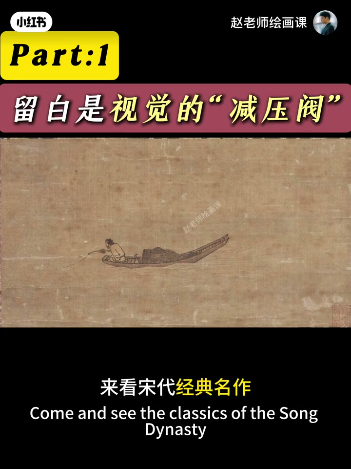
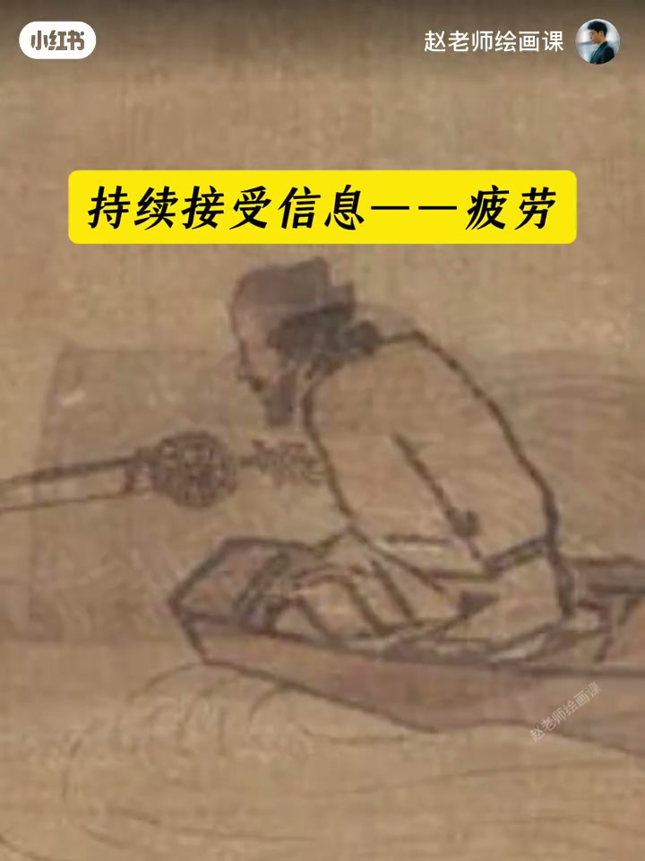
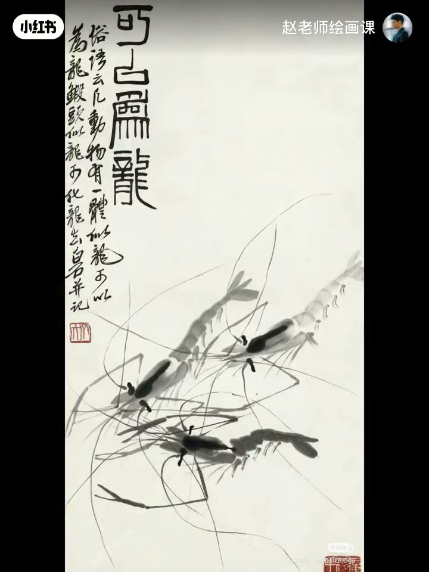
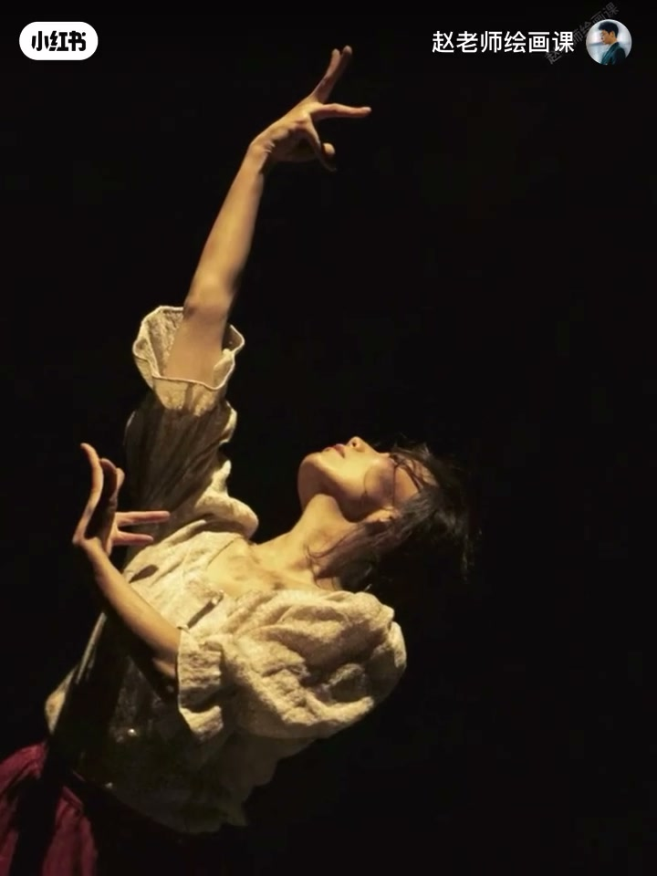
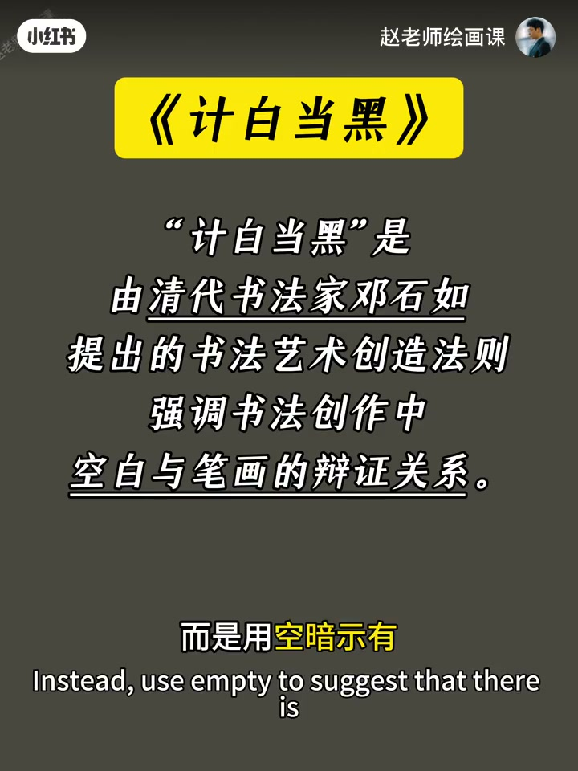

内容要点
大师画面空灵，构图上最大差别常是留白。马远《寒江独钓》主体不到一成，空白成无信息缓冲带；填满则空灵崩塌。齐白石画虾不画水，空白化为水的意象并以虚衬实。齐白石《蛙声十里》用蝌蚪方向把故事延伸画外。画论「计白当黑」：空不是未完成，是用空暗示有——八大、郑板桥、莫兰迪皆然。下期解决不敢留白，并给新手公式。
知识结构
马远大空白＝眼睛休息区。
齐白石空白成水并聚焦虾动态。
蝌蚪方向暗示画外蛙声。
计白当黑；八大／板桥／莫兰迪。
留白是主动设计：给眼睛缓冲区、衬出主体、把故事与意境延伸到画外——空白越纯粹，主体与想象越清晰。
00:00-01:12马远：制造视觉缓冲
为何大师空灵有意境？通过五幅名画聊留白。马远《寒江独钓》：垂钓者与小船不到10%面积，其余全空白，却成千古名作。眼睛先捕捉主体，持续信息会疲劳，空白成无信息缓冲带——如从拥挤电梯走进空旷大厅。
反向验证：填满空白，空灵意境瞬间崩塌。这是留白第一作用：制造视觉缓冲。00:21／00:45。


01:12-01:58齐白石：以虚衬实
齐白石画虾从不直接画水，观众却清晰感到虾在水中——秘诀在背景空白：大脑自动转化为水的意象；更关键是剔除分散注意的元素，迫使视线聚焦虾的动态、触须颤动与浓淡变化。
第二核心作用：以虚衬实。空白越纯粹，主体越清晰，如追光灯下演员。01:18。

01:58-02:25蛙声十里：故事延伸线
《蛙声十里出山泉》只画山涧与小蝌蚪，两侧空白看似无内容，却通过蝌蚪游动方向暗示画外有青蛙。留白在此不仅突出主体，更成故事延伸线。02:04。

02:25-03:57计白当黑：意境载体
画论「计白当黑」道破终极奥义：空白不是未完成，而是用空暗示有。八大山人鸟雀：一鸟一枯枝，盯空白久了会脑补萧瑟旷野、呼啸寒风甚至鸟叫回音——空白成意境载体。郑板桥竹石：竹叶间留白形状顺着风走向，藏着风的力量，静态竹有了动的韵律。
西方莫兰迪瓶罐间留白像蒙薄雾，普通瓷器画出时间凝固感，唤起安静与永恒共鸣。作业：找一幅留白超神的作品分析属于哪类作用；下期解决不敢留白并给三个新手公式。02:39／03:01。

完整转录（104段）
以下文本由 Whisper medium 模型自动转录，可能存在少量识别误差，已尽可能修正。
为什么大师的画面空灵通透
有充满意境
在构图上
我们和大师最大的区别是什么
今天啊
我们通过五福名画
聊聊刘白到底有多重要
全程干货
建议呢先喝口水
让我们开始
来看宋代经典名作
马远的寒江独吊图
整个画面中
垂吊者与小船
仅占不到10%的面积
其余呢全是空白
但恰恰是这片空白
让这幅画成为千古名作
这是为什么
我们看画时
眼睛会先捕捉到明确的主体
比如小船
但持续接受信息啊
会产生疲劳
这时空白区域就成了无信息缓冲带
没有山石水波等干扰元素
视线从密集信息
滑向空白
就像从拥挤的电梯
走进空旷的大厅
瞬间获得放松
我们不妨反向验证一下
如果把空白填满
那千山鸟飞掘的空灵一镜
则会瞬间崩塌
这便是留白的第一个作用
制造视觉缓冲
起白时的留白也见功利
他画虾从不直接画水
却能让观众清晰感受到
虾在水中
秘诀就藏在背景的空白里
这片空白会为大脑
自动转化为水的异象
更关键的是
它剔除了所有可能
分散注意力的元素
迫使视线焦距于虾的动态
虾前的张力
触虚的颤动
虾身的浓淡变化
每一处细节都被放大了
这是留白的第二个核心作用
以虚趁实
空白越纯粹
主体就越清晰
就像舞台追光灯下的演员
周围越暗
越能聚焦视线
再看《蛙声十里出山泉》
画中只画了山间和小蝌蚪
两侧的空白看似无内容
却通过蝌蚪游动的方向
暗示了画外有青蛙
留白在这里不仅突出主体
更成了故事的延伸线
中国传统画论有这样一句话
叫 即白当黑
短短四个字
一语盗破了留白的终极奥义
空白不是未完成
而是用空暗示有
在八大山人的鸟雀图里
一只鸟 一根枯枝
其余全是空白
但盯着空白看久了
你就会不由自主的脑补出
消色的旷野
呼啸的寒风
甚至能听到鸟叫的回音
空白在这里成了意境的载品
郑板桥的竹石图更妙
竹叶间的留白形状
完全顺着风的走向来设计
空白处看似空无一物
却藏着风的力量
让静态的竹子有了动的韵律
西方画家同样深暗此道
莫兰以笔下的瓶瓶罐罐
彼此间的留白像蒙了层薄雾
硬是把普通瓷器画出了时间凝固感
这种留白唤起了观众对安静与永恒的共鸣
总结在下面
作业时间到
找一幅你觉得留白超神的作品
试着分析它的留白属于哪类作用
我在评论区等着大家的分享
下期我们将解决不敢留白的痛点
还会教大家三个新手能直接套用的留白公式
像系统学习构图的同学
我的形式美构成课程将于近期上线
记得关注哦
下期见喽
拜拜